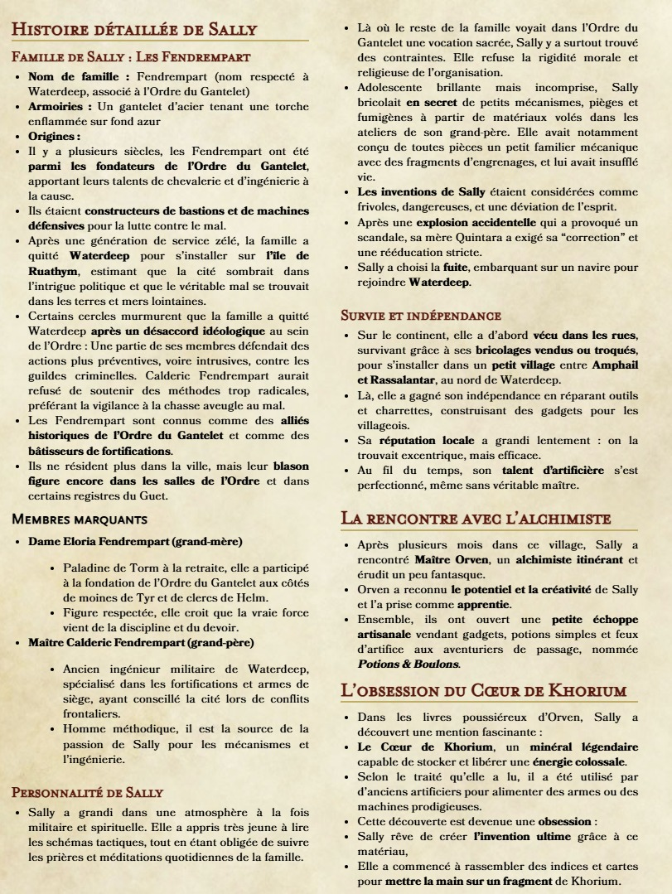

Je cherche toujours à me débrouille pour m'en sortir que ce soit grâce à un gadget ou un subterfuge.
J'aime tellement les bêtes que je chercher à adopter tout les chats, chiens et animaux errants mignons pour en faire des compagnons.
Je fais comme je pense, j'ai ma propre façon de pensé et de faire mais je ne reste pas les bras croisé face à ce que je juge être une injustice.
